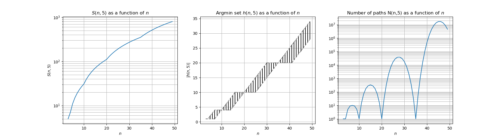
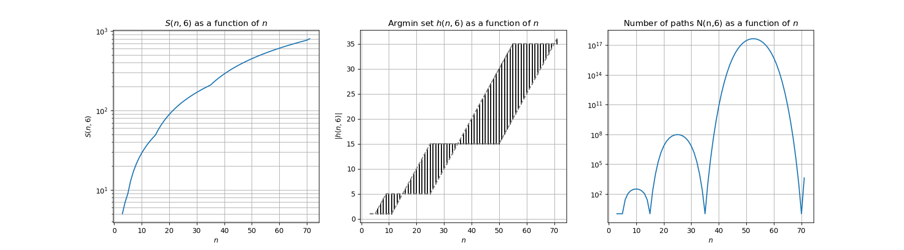
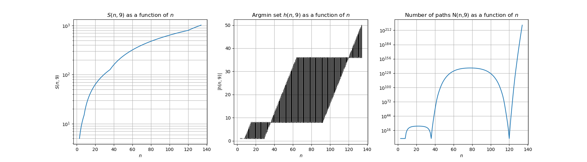

-peg
-peg  -disc from source to destination as follows:
-disc from source to destination as follows:We consider Stewart's algorihm for solving the multi-peg Hanoi Tower problem.
Stewart's algorithm solves the -peg -disc from source to destination as follows:
 (see below) ;
(see below) ; -high upper part of the tower to any peg different from source and destination, say number peg
-high upper part of the tower to any peg different from source and destination, say number peg  ;
; -high lower part from source to destination using all pegs except ; from to destination.
-high lower part from source to destination using all pegs except ; from to destination.See below for an illustration of this algorithm for n=10 discs.
The number of steps  to solve the -peg -disc problem satisfies the recurrence relation:
to solve the -peg -disc problem satisfies the recurrence relation:

 and
and  for all
for all 
For any  , an optimal choice is any element of the argmin set
, an optimal choice is any element of the argmin set  .
The number of paths
.
The number of paths  that can generated by the algorithm satisfies the following recurrence:
that can generated by the algorithm satisfies the following recurrence:

 if
if  or
or  .
.
Below are some empirical curves of the above quantities.









Sandi Klavžar, Uroš Milutinović, Ciril Petr. On the Frame–Stewart algorithm for the multi-peg Tower of Hanoi problem. Discrete Applied Mathematics. Volume 120, Issues 1–3, 15 August 2002, Pages 141-157.
Thierry Bousch. La quatrième tour de Hanoï. Bull. Belg. Math. Soc. Simon Stevin Volume 21, Number 5 (2014), 895-912.